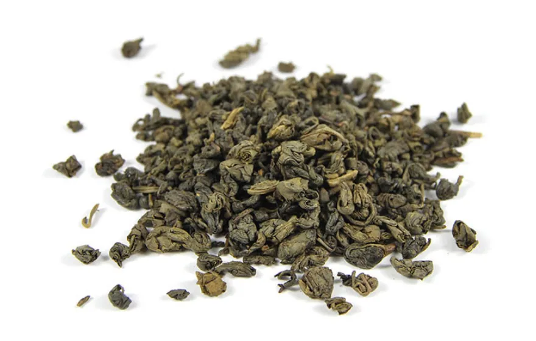

Élixirs naturels · 4 min de lecture
Élixir Vitalité & Clarté Mentale au Thé Vert :Élixir naturel pour l’énergie douce, la concentration et l’équilibre intérieur

Introduction
Dans un quotidien rythmé par le stress, les sollicitations constantes et la fatigue mentale, notre organisme réclame souvent une pause… mais une pause intelligente.
Pas un stimulant brutal, pas une solution artificielle, mais un soutien naturel capable d’éveiller l’énergie sans agresser le système nerveux.
L’élixir à base de thé vert, lorsqu’il est bien formulé et associé aux bons ingrédients, devient bien plus qu’une boisson :
👉 c’est un rituel d’alignement entre le corps et l’esprit.
Problème
Fatigue chronique, brouillard mental, baisse de concentration, nervosité diffuse…
Beaucoup de personnes compensent avec :
trop de café,
des boissons sucrées,
ou des stimulants artificiels.
Résultat :
⚠️ pics d’énergie suivis de chutes brutales,
⚠️ surcharge du système nerveux,
⚠️ épuisement progressif des réserves internes.
Promesse
Cet élixir au thé vert propose une autre voie :
🌱 une énergie stable,
🧠 une clarté mentale progressive,
💚 un respect total du rythme naturel du corps.
Il n’excite pas : il harmonise.
Il ne force pas : il accompagne.
Bénéfice
En intégrant ce rituel dans ton quotidien, tu peux ressentir :
une vigilance douce et durable,
une meilleure concentration,
une sensation de légèreté digestive,
un mental plus calme mais plus clair,
une énergie qui ne s’effondre pas en milieu de journée.
Pourquoi ce remède est efficace
Le thé vert est unique par sa composition naturelle :
une caféine modérée, libérée lentement,
des polyphénols antioxydants puissants,
une synergie naturelle avec des acides aminés apaisants.
Lorsqu’il est associé à des ingrédients intelligemment choisis, il agit à la fois :
sur le système nerveux,
sur la circulation de l’énergie,
sur la protection cellulaire.
👉 C’est cette alchimie précise qui fait toute la différence.
Les bienfaits
🌿 Énergie stable et durable
Contrairement au café, le thé vert soutient l’éveil sans créer de tension.
🧠 Clarté mentale & concentration
Idéal pour le travail intellectuel, la créativité ou l’étude.
🛡️ Protection antioxydante
Il aide à lutter contre le stress oxydatif lié au stress chronique.
🌱 Soutien digestif léger
Il accompagne en douceur le système digestif sans l’alourdir.
🧘 Équilibre nerveux
Il favorise un état d’alerte calme, propice à la présence et à la maîtrise de soi.
Ingrédients (1 litre)
1 cuillère à soupe de thé vert en feuilles de qualité (sencha ou long jing de préférence)
1 petit morceau de gingembre frais (2 cm)
Le jus d’½ citron bio
1 cuillère à café de miel brut ou de sirop d’érable
1 pincée de curcuma
1 litre d’eau filtrée
Préparation
Chauffe l’eau à 70–80°C (jamais bouillante).
Infuse le thé vert 2 à 3 minutes maximum.
Retire le thé, ajoute le gingembre râpé et le curcuma.
Laisse reposer 5 minutes supplémentaires.
Filtre, puis ajoute le citron et le miel.
Mélange doucement en conscience.
👉 L’intention compte : prends quelques secondes pour respirer avant de consommer.
Comment l’utiliser
Le matin, à jeun ou après un petit-déjeuner léger
En milieu de matinée pour soutenir la concentration
Avant une séance de travail intellectuel ou créatif
⏱️ 1 à 2 tasses par jour suffisent.
🚫 Évite après 16h si tu es sensible à la caféine.
À qui s’adresse ce rituel
Cet élixir est idéal pour :
les personnes mentalement sollicitées,
les créatifs et entrepreneurs,
les étudiants,
ceux qui veulent réduire le café,
toute personne cherchant une énergie plus consciente.
Précautions
⚠️ Déconseillé en cas de :
carence sévère en fer (à consommer loin des repas),
hypersensibilité à la caféine,
grossesse (demander avis médical).
👉 Toujours privilégier des ingrédients biologiques et de qualité.
Conclusion & appel à l’action
L’élixir au thé vert n’est pas une solution miracle immédiate.
C’est un rituel de reconnexion, une manière d’envoyer un message clair à ton corps :
je te soutiens, je t’écoute, je te respecte.
👉 Si la nature ne l’a pas créé, ne le buvez pas.
Si tu souhaites aller plus loin dans cette approche naturelle du bien-être, je partage régulièrement :
des élixirs ciblés,
des rituels santé simples,
des guides pratiques pour renforcer le corps et apaiser le mental.
📚 Je suis auteur bien-être sous le pseudo Chest0 JM.S., et mes ouvrages sont disponibles sur Amazon.
🔗 Retrouve tout mon univers ici :
👉 https://chest0.fr
✨ Commence aujourd’hui à nourrir ton système nerveux avec douceur, intelligence et naturel.
👉 Si tu veux aller plus loin, découvre aussi notre prochain rituel
« Travail assis : pauses actives »
👉 Créez votre planning de pauses gratuit : chest0.fr/outils/pauses-actives/
« Journal du sommeil »
👉 Tenez votre journal du sommeil sur 7 jours, gratuitement : chest0.fr/outils/journal-sommeil/
« Les 20 aliments des centenaires » et « Microbiote intestinal »
👉 Mes livres de recettes naturelles, élixirs et détox : chest0.fr/pages/livres.html
« 4 habitudes à observer au quotidien »
👉 Faites le point sur vos habitudes avec l'outil gratuit : chest0.fr/outils/equilibre-quotidien/
Plus de 40 recettes d'élixirs dans les livres Chest0.
Voir les livres